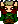
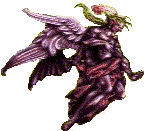
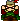
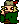
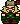

Kefka Lives: Told by Kefka himself
"Hi and crap like that...for those of you who are dim bolts, I am the one and only Kefka. Now some of you wimps out there might say something assiniying like, 'Duh, I thought you were dead?'. Well allow me to explain... remember this ...er, thing:

"I can't believe that you actually thought this giant purple blob with wings was me! Ha! Your about as gullible as those Returner scum-buckets! You see, this was all part of my ingenious folly!
"Ahem- you see all villains can call the 'Monster Hot-Line'. You can quite conveniently get a monster, that has nothing to do with the plot of the video game. Well, the returners finally arrived to the top of my tower and began lecturing to me about life, the universe, everything. It was right about when everyone yelled 'It's over Kefka!' I realized that I was in big trouble. So as the Returner-Dweebs were rearranging themselves and preparing for battle, I got out my brand new cellular phone. I called the 'Monster Hot-Line'. I said I needed something really big and annoying to distract the so called heros while I make a get away. The Monster Hot-Line said they had a shortage of monsters. All they had left was: 'The Extra-Large Magical Statue Look-a-Likes' and 'The Flying Purple Gingerbread Doughboy'. So in an act of desperation took the offer and had it send Super Express to my tower. About two seconds later I got the packages. Luckily the good guys were still fighting over who was going to get the Atma weapon. 'I get the Atma weapon because I'm an esper!' 'Shut-up! I get it because I'm the King of Figaro!' 'Ya right, I get it because I'm uh, er, umm... a treasure hunter!' So this gave me and opportunity to plug in 'The Magical Statue Look-a-Likes'. While that monstrosity kept the idiots busy, I began to fill the 'Gingerbread Doughboy' with air.
"Geesh, that thing almost made me hyperventilate! I wondered if the Returner-guys would buy that this purple balloon was supposed to be me? But I didn't have time to think about that now! I then recorded my voice say stupid corny stuff like: 'Life... Dreams... Hope... Where did they come from? And where are they headed? These things... I am going to destroy!' and 'The end comes... beyond chaos.' Then I added a few 'Mwa ha ha’s' and programmed the balloon to do some pathetic moves:
"Mwa ha! I then took a miniature space shuttle to the moon. Some guy named Golbez said that the moon is a nice place to hide out. Fortunately, the good-guys thought that the balloon-thing was me transformed into the pinnacle of evil or something like that. Ha! What a laugh! Now get out of here, your annoying me!"